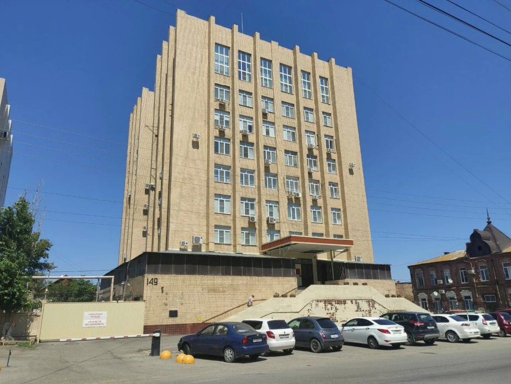

Электронный обмен документами
Астраханская ЭСК
Астраханская энергосбытовая компания (Астраханская ЭСК) — ключевой участник энергорынка региона. Основана в 2005 году, компания обеспечивает электроэнергией тысячи потребителей.
ПАО «АЭСК» выполняет функции гарантирующего поставщика электроэнергии на территории Астраханской области. Компания приобретает электроэнергию на оптовом и розничных рынках и реализует её конечным потребителям — как юридическим, так и физическим лицам. Объём поставки электроэнергии составляет 2721 млн кВт·ч в год. Клиентами компании являются более 383 тыс. физических лиц и 11 тыс. юридических лиц.
История
Компания была основана в 2005 году в рамках реформы электроэнергетики. Основной задачей стало обеспечение прозрачной схемы энергоснабжения на территории Астраханской области.
Компания была зарегистрирована 11 января 2005 года в результате реорганизации ОАО «Астраханьэнерго» путём выделения самостоятельных юридических лиц по видам деятельности: генерация, передача и сбыт электроэнергии. С 2015 года организация функционирует в статусе публичного акционерного общества.
Деятельность и миссия
Астраханская ЭСК занимается закупкой, поставкой и учётом электроэнергии. Миссия компании — обеспечение надёжного энергоснабжения для всех категорий потребителей, от частных лиц до промышленных предприятий.
Миссия компании — надёжное снабжение потребителей Астраханской области электроэнергией и предоставление услуг, обеспечивающих прибыльность и конкурентоспособность компании.
Цели компании включают:
- достижение высоких финансово-экономических результатов и повышение прозрачности деятельности
- соблюдение интересов акционеров
- повышение качества обслуживания клиентов
- совершенствование корпоративной культуры управления
- формирование отношения потребителя к энергии как к товару
- сохранение и расширение рынка сбыта энергоресурсов
Финансовые показатели
По данным Центра раскрытия корпоративной информации, уставный капитал ПАО «Астраханская энергосбытовая компания» составляет 5 417 301 рубль. Компания регулярно публикует финансовую отчётность и информацию о своей деятельности в соответствии с требованиями законодательства.
Руководство
- Гринько Алексей Сергеевич — генеральный директор
- Клишин Михаил Сергеевич — директор по безопасности
- Серебренников Сергей Леонидович — директор по сбыту электрической энергии
- Артамонов Филипп Андреевич — директор по экономике и финансам
- Шляхов Андрей Владимирович — директор по правовым вопросам
- Бойправ Ольга Николаевна — директор по информационным вопросам
- Щербакова Лилия Ивановна — главный бухгалтер